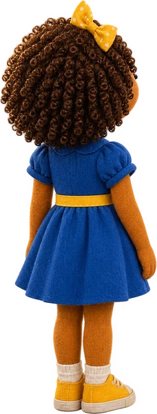
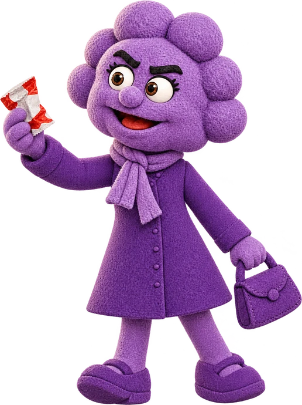
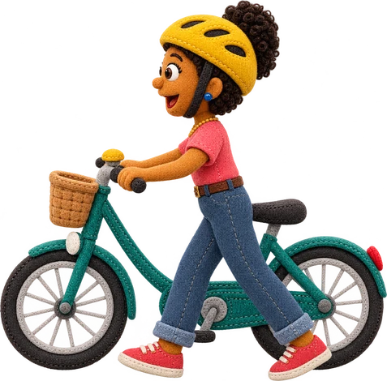
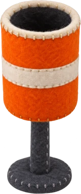
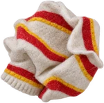
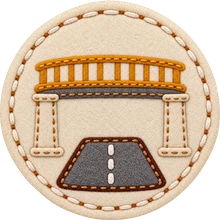
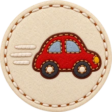
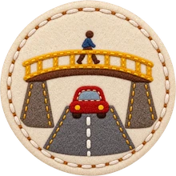
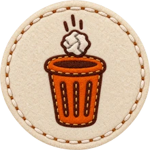
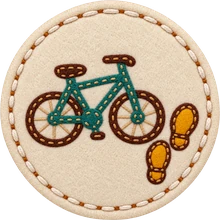

Etapa 5 · roteiro §4 1:03 – 1:17
De bicicleta, desça e empurre
…quem está de bicicleta não pode atravessar pela passarela pedalando, deve descer e empurrar a bicicleta.
- Uma ciclista chega pedalando pelo piso e toca a campainha.
- “Como ela deve passar pela passarela?” Dois quadros em vídeo: pedalando e empurrando.
- Ela desce e atravessa a pé, empurrando a bicicleta, atrás da Nina.
Por quêNa passarela todo mundo divide o mesmo piso estreito. Pedalando, a bicicleta pode atropelar alguém.

06 · Elenco
Os mesmos personagens, em cima da passarela

Lumi · o guia
Aponta a construção e pergunta como o educador, com a mesma voz dos outros jogos.

Nina · a protagonista
De costas, olha a avenida da calçada e, depois, por cima do corrimão.

Dona Pressa · o erro comum
Ganhou uma pose nova: mostrando o papel do lanche que quer jogar lá embaixo.

A ciclista · a pé
A Ana dos outros jogos, agora descendo da bicicleta e empurrando.
07 · Estética
O mesmo feltro. Peças novas só onde era preciso.
Balão, cartão, botão, anel, estrela, faixa e o quadro do quiz são os dos outros jogos. Foram gerados o logo, a lixeira, o papel do lanche, os ícones dos cartões e as duas poses novas.
Os carros e as motos de frente e de costas vieram do jogo 3, agora maiores: na vista da calçada, o carro mais perto passa quase do tamanho da Nina.
Peças novas







Reaproveitadas